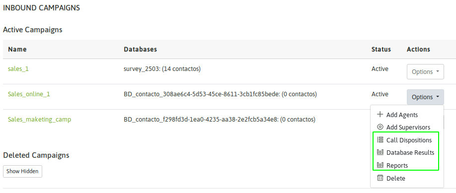
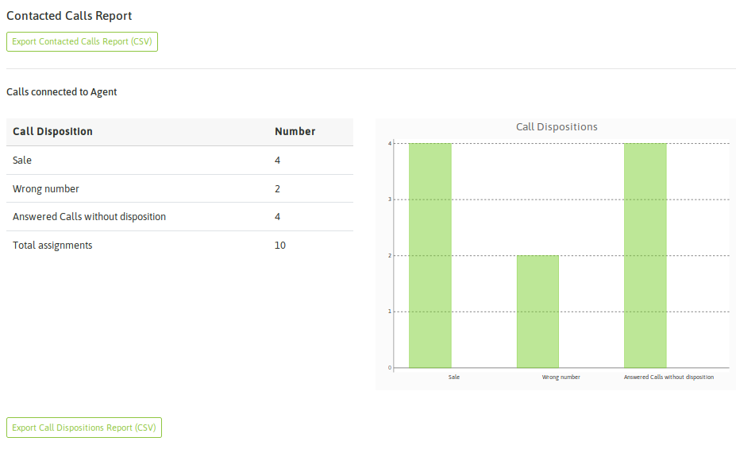

En esta sección se cubren todos los reportes disponibles para una campaña de llamadas entrantes.
Figure 1: Campaign Reports view
Reporte general de una campaña entrante¶
Este reporte nos brinda un resumen de varios aspectos de la campaña. Cuestiones como cantidad de llamadas recibidas (atendidas y no) y realizadas desde la campaña dispuestas en detalle con respecto a las calificaciones generadas por agentes.
Para acceder a este reporte, se debe ingresar a la opción «Reportes» dentro de la campaña.
La primera información que nos arroja la vista son las «llamadas que ingresaron» y las «llamadas realizadas» dentro la campaña.
Recordemos que en OMniLeads un agente puede procesar una llamada manual y asociarla a una campaña entrante, por ejemplo si estaba atendiendo una llamada y la misma se corta, el agente podrá marcar al número desde la campaña entrante pese a que se trata de una llamada manual saliente.

Figure 2: Inbound calls / Performed calls
Siguiendo el recorrido por la presente pantalla, nos vamos a encontrar con el primer botón de exportación de información a CSV. En este caso el botón nos permite exportar a «CSV / Planilla de cálculos» todas las llamadas atendidas en la campaña.

Figure 3: Attended calls CSV
Como se puede apreciar, el archivo presenta como primer columna el teléfono desde el que se llamó a la campaña. Si bien el contacto puede tener asociado más de un teléfono en este reporte la columna «Phone number» hace referencia al teléfono que originó la comunicación hacia la campaña y al cual se asocia la calificación de agente (columna calificación).
Volvemos a recarcar el hecho de que en campañas entrantes no siempre se asocia un contacto a una base de contactos. Cuando una llamada entrante no tiene un contacto asociado o la campaña directamente no tiene una base asociada, entonces los mismos se listan con la etiqueta «fuera de base» en la columna base de datos de nuestra planilla de cálculos (figura3).
Debajo del botón de exportar llamadas atendidas, encontramos un informe que se representa la contabilización de las diferentes calificaciones que realizaron los agentes sobre las llamadas atendidas en la campaña (figura 4).
En este caso y en general toda información tabulada puede generarse como una exportación a CSV para poder disponer de los datos sobre una planilla de cálculos.
Figure 4: Dispositions
Continuando con la sucesión de informes presentados en la pantalla de reportes de la campaña, nos vamos a topar con un listado que contibiliza todas las llamadas que no fueron atendidas en la campaña, es decir intentos fallidos clasificados de acuerdo a si fueron llamadas abandonadas o llamadas expiradas por tiempo de espera agotado.

Figure 5: Not attended calls
A continuación se presenta un informe sobre la performance de cada agente que trabajó en la campaña. Se expone mediante la contabilización de cada calificación generada por cada agente. Además se cuenta con un link que permite saltar a una pantalla con un informe más detallado sobre el agente en cuestión y su performance en la campaña en cuestión.

Figure 6: Contacts pending / Performed calls
Entonces si se hace click sobre uno de los agentes, se despliega una nueva pantalla con mayor detalle, en la que se contempla por ejemplo la información de:
- Tiempo acumulado en la campaña
- Tiempo en pausa dentro de la campaña
- Tiempo efectivo en llamadas dentro de la campaña
- Cantidad de llamadas procesadas
- Tiempo promedio de llamada
- Cantidad de intentos de llamadas fallidas
- Procentajes de efectividad

Figure 8: Agent performance detail
Regresando al reporte de la campaña, como último ítem se presenta un listado de todas las llamadas procesadas en la campaña y su resultado. Se expone de manera separada todas las llamadas manuales que se hayan hecho en la campaña. Recordemos que en cualquier tipo de campaña, se pueden generar paralelamente llamadas manuales.

Figure 9: Call details
Reporte de calificaciones¶
Este reporte presenta cada contacto gestionado en la campaña junto a la calificación que ha recibido por parte del agente que procesó la llamada asociada al contacto. Además se puede generar un archivo CSV con las calificaciones ordinarias por un lado y otro con los contactos cuya calificación recibida fue del tipo «gestión».

Figure 10: Call dispositions detail
Es importante aclarar que en este listado también se contemplan aquellos contactos introducidos dinámicamente en la campaña por los agentes. Por ejemplo contactos que llamaron a la campaña y no estaban en la base de contactos.
Resultados de la base de contactos¶
Aquí se presenta un listado plano de la base de contactos asociada a la campaña y el resultado de la última llamada realizada por el contacto a la campaña entrante. La diferencia con el reporte anterior es que aquí NO se listan los contactos que fueron introducidos en el transcurso de la campaña, sino que se busca hacer un mapeo entre la base de contactos asignada a la campaña y el resultado al ser procesada por la campaña.
NOTA: es importante remarcar que este reporte es de suma utilidad en campañas preview y predictivas, siendo quizás no muy irrelevante en campañas entrantes.

Figure 11: DB result